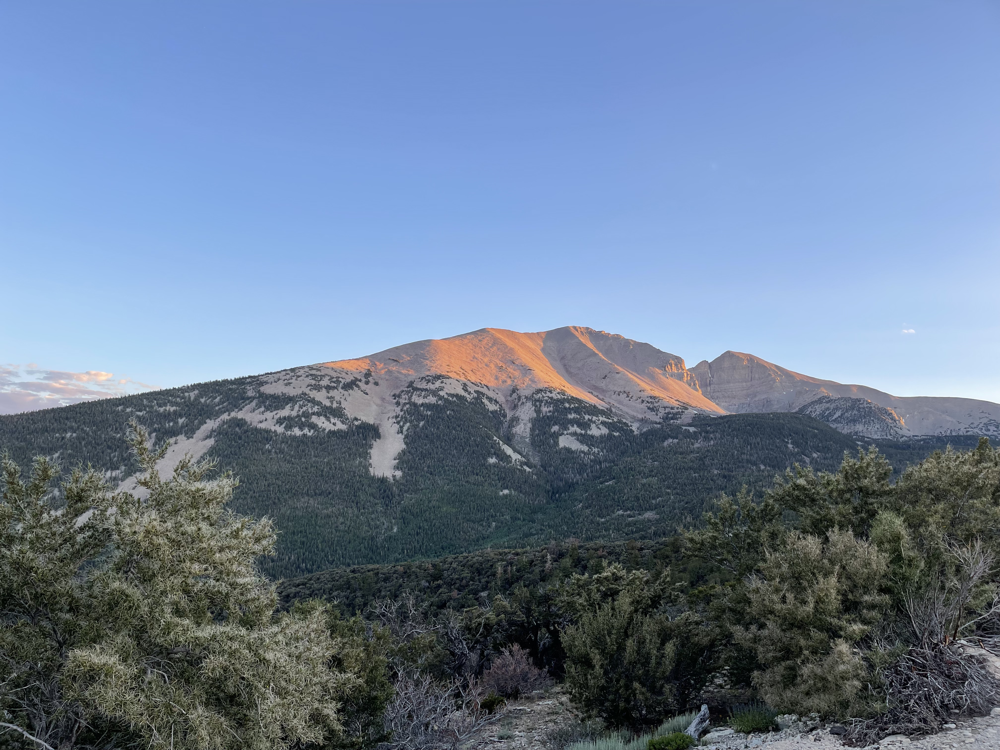
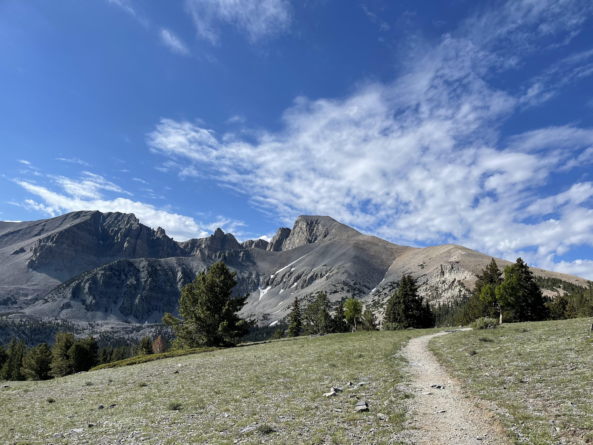
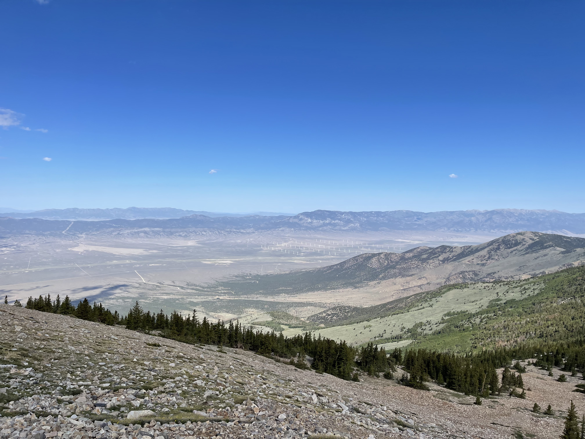
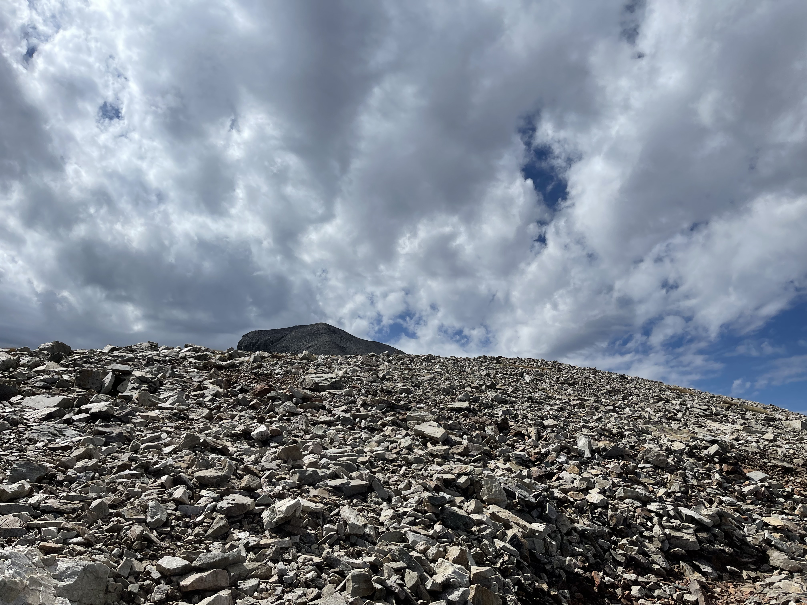
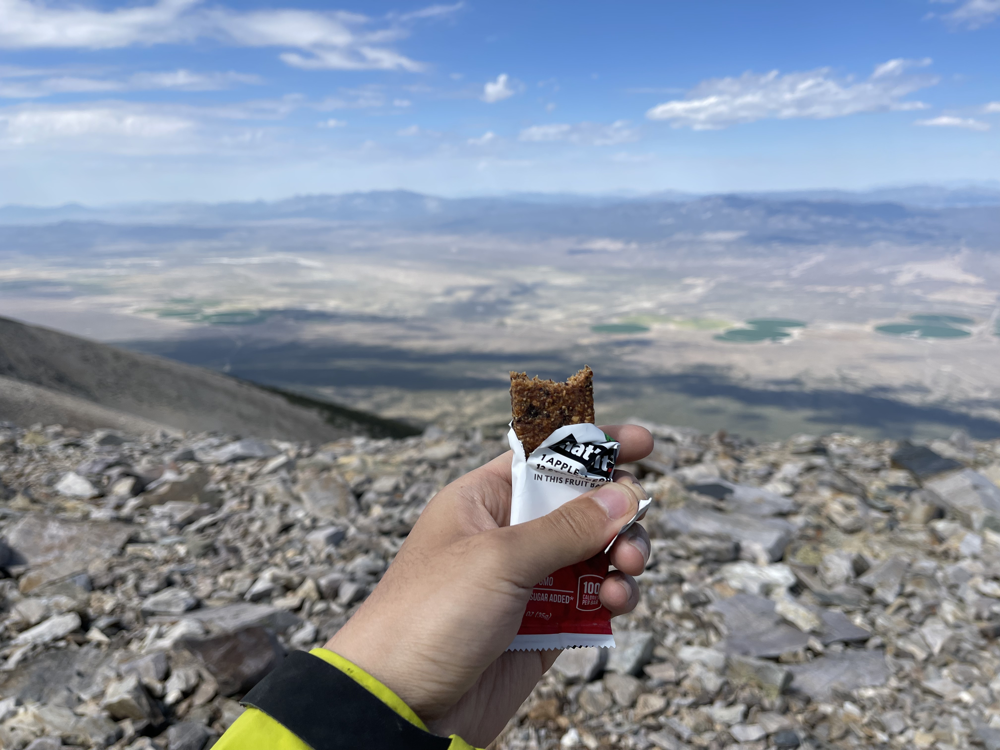
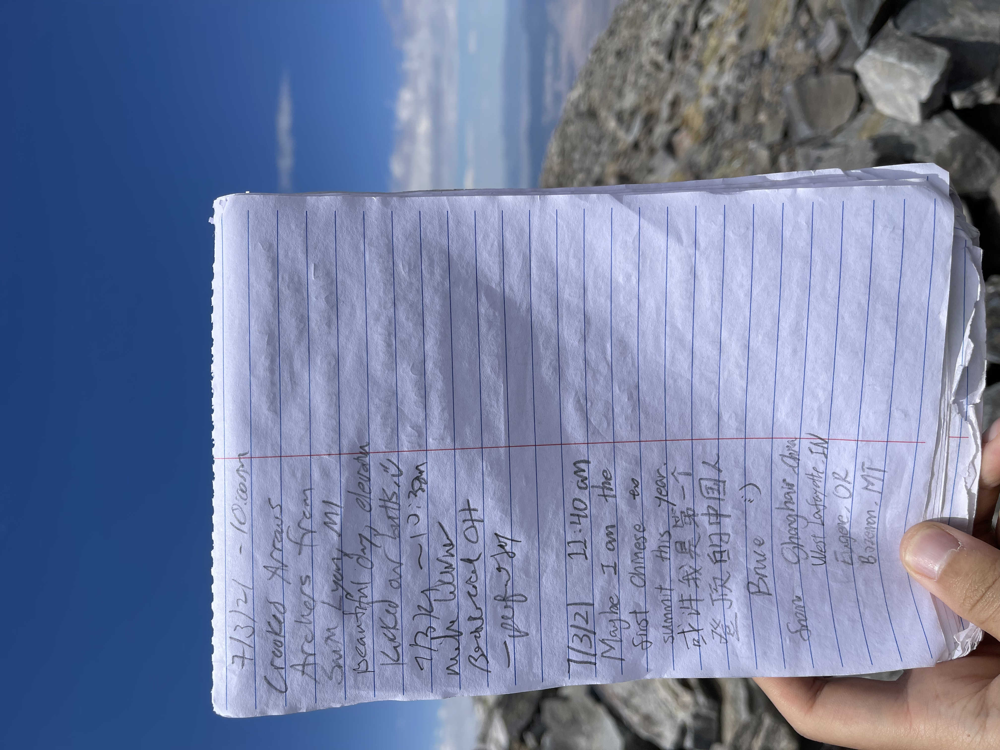

Summiting Wheeler Peak in Nevada
Wheeler Peak came onto my radar last summer while I was traveling U.S. 50, a.k.a. the Loneliest Road in America. I did not reach the summit that year because I arrived really late and only had time to hike to Stella Lake. This year, I came back to finish what I started. Wheeler is probably one of the most accessible 13ers: the trailhead sits around 10,000 ft, almost at the tree line. I camped in the back of my car at the trailhead. It was my first time sleeping at such a high elevation, and I had to crack the front windows for ventilation because I was having a hard time breathing inside the car.


The sun woke me around 6:30. I ate some breakfast, packed all my gear, and headed for the summit. The first section climbs gradually toward the tree line. After about 2.1 miles, I finally cleared the trees. By that point, however, I had gained only about 1,000 vertical feet, which meant the rest of the trail was going to be really steep.



Beyond the tree line, the trail crossed a seemingly endless scree field. To reach the summit, I had to traverse a ridge and then scramble the rest of the way up. The scree field was pretty technical, and careful footing was essential because nothing beneath my feet felt stable. Once I climbed above 11,000 ft, I could feel the elevation taking a toll on my body. I slowed down and had trouble breathing smoothly. The trail kept getting steeper, and the summit began to feel impossible to reach.



When I finally reached the end of the ridge, the summit looked within reach. I still had 1,000 vertical feet to go, though, and the terrain ahead was really steep and technical. I took a longer break and ate a fruit bar and an energy gel to prepare for the final push. The last stretch required steep scrambling, and about 100 ft below the summit, I lost the trail. I had to do some wild scrambling over loose boulders, which was pretty nerve-racking. At the summit, I found a mailbox containing a logbook and a sign. Standing on top of a 13er felt like a real accomplishment.



